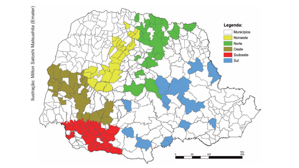

Amostragem no talhão
Contagem regular de pragas e inimigos naturais direto na lavoura, para saber exatamente o que está acontecendo antes de decidir qualquer coisa.
Manejo Integrado de Pragas · Paraná
O Manejo Integrado de Pragas combina observação, biologia e bom senso agronômico para controlar pragas gastando menos veneno, menos dinheiro e menos solo. No Paraná, a prática já prova seu valor — mas ainda está longe de cobrir o estado inteiro.
01 — Por que isso importa
O uso repetido dos mesmos inseticidas, ano após ano, tem um custo que não aparece na nota fiscal: pragas mais resistentes, inimigos naturais eliminados junto com a praga-alvo, e um solo que perde parte da vida que sustenta a próxima safra.
O resultado é um ciclo conhecido por quem está na lavoura: aplica-se mais, o efeito dura menos, e o custo por hectare só sobe. Romper esse ciclo não exige abandonar o controle químico — exige usá-lo no momento certo, na dose certa, como parte de uma estratégia maior.
02 — O método
O MIP não é um produto nem uma receita fixa — é uma forma de decidir. Ele reúne monitoramento constante, controle biológico, limites técnicos para agir e manejo cultural do talhão. Nenhuma dessas práticas sozinha resolve; juntas, formam um sistema.
Contagem regular de pragas e inimigos naturais direto na lavoura, para saber exatamente o que está acontecendo antes de decidir qualquer coisa.
Só se aplica controle quando a praga atinge uma densidade que efetivamente ameaça o retorno da lavoura — não à primeira folha mordida.
Preservação e liberação de inimigos naturais — joaninhas, vespas parasitoides, fungos entomopatogênicos — que já fazem parte do controle antes de qualquer produto entrar em cena.
Rotação de culturas, época de plantio e escolha de cultivares que tornam o ambiente menos favorável à praga desde o início, reduzindo a necessidade de intervenção.
03 — O retrato do estado
O mapa abaixo, produzido pela Emater, reúne os municípios paranaenses com estratégias de Manejo Integrado de Pragas em curso, organizados por macrorregião. As áreas coloridas mostram avanço real. As áreas em branco mostram o tamanho do trabalho que ainda falta.

Ilustração: Milton Satoshi Matsushita (Emater)
Toque em uma região
Todas as regiões: mesmo somando as cinco cores do mapa, uma parte considerável dos municípios do Paraná segue sem registro de manejo integrado. Cada mancha branca é uma lavoura ainda dependendo só do calendário de pulverização.
Um estado do tamanho e da relevância agrícola do Paraná não pode depender de bolsões isolados de boa prática. Ampliar o MIP para os municípios ainda em branco no mapa é o próximo passo — e ele passa por assistência técnica, troca de informação entre produtores e decisão de quem está no talhão hoje.
04 — O retorno
Ao agir só quando o nível de dano justifica, o produtor reduz o número de pulverizações sem abrir mão da proteção da lavoura.
Alternar estratégias de controle diminui a pressão de seleção que cria populações resistentes aos mesmos princípios ativos.
Menos aplicações amplas significam mais joaninhas, vespas e fungos benéficos trabalhando de graça a favor da lavoura.
Decisões baseadas em monitoramento evitam gasto com produto em momentos que não trariam retorno real.
05 — Primeiros passos
O MIP se constrói talhão por talhão, safra por safra. Estes são os passos que costumam abrir a porta.
Emater, cooperativas e engenheiros agrônomos locais já têm protocolos de monitoramento prontos para o seu cultivo.
Escolha uma área para testar a amostragem regular antes de expandir a prática para toda a propriedade.
Anotações simples de pragas e inimigos naturais ao longo do tempo já embasam decisões melhores do que a memória.
Municípios que aparecem coloridos no mapa começaram assim: um produtor mostrando ao outro que funciona.
Quanto mais produtores adotarem o MIP, menor a pressão de pragas na região inteira — porque manejo integrado funciona melhor em escala de paisagem, não só de talhão isolado.
Voltar ao início